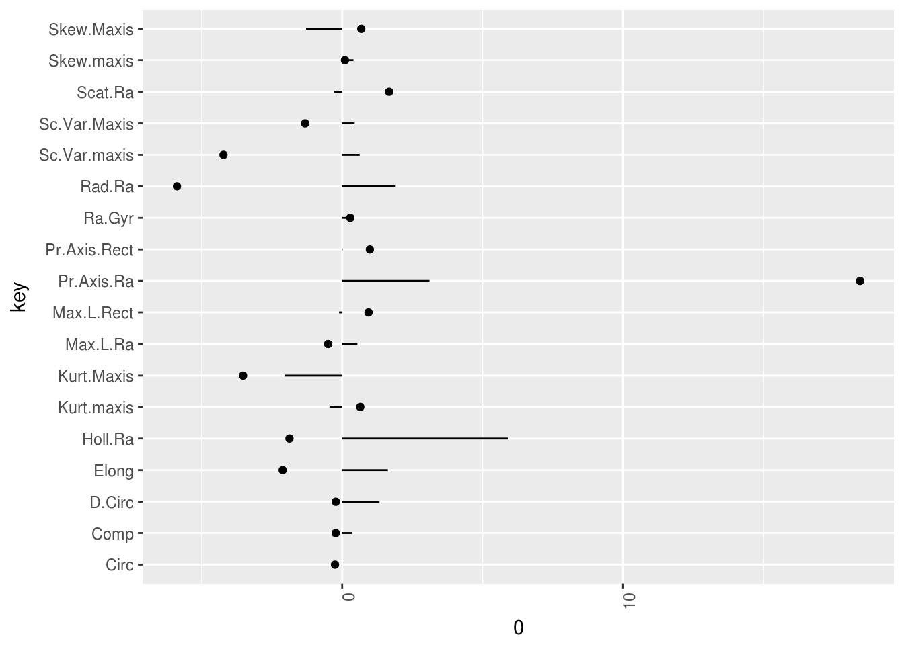

4 Model-agnostic explanations
Separating the explanations from the machine learning model (= model-agnostic explanations) gives some benefits. The big advantage of model-agnostic vs model-specific explanation algorithm is the flexibility. When the explanation system is independently applicable even when the underlying model is switched, it frees the practitioner to use different machine learning models without restrictions. It is also more efficient to build interfaces on top of model-agnostic systems, because this has to be done only once and not for each model-specific explanation system. Usually not one but many types of machine learning models are tested in development time and if you want to compare the models in terms of interpretability this is easier with model-agnostic explanations because the system is the same for both models that are being compared (Ribeiro, Singh, and Guestrin 2016).
The alternatives are either using only interpretable models as introduced in Chapter 2, which has the big disadvantage to usually loose accuracy compared to other approaches. The other alternative is to use more flexible model classes that come with built in explanations. The drawback here is that it ties you to this one algorithm and it will be hard to switch to something else.
Desirable aspects of a model-agnostic explanation system (Ribeiro, Singh, and Guestrin 2016): - Model flexibility: Not being tied to an underlying particular machine learning model. The method should work for random forests as well as convolutional neural networks - Explanation flexibility: Not being tied to a certain form of explanation. In some cases it might be useful to have a linear formula in other cases some decision rules - Representation flexibility: The explanation system should not have to use the same feature representation as the model that is being explained. So when a text classifier uses abstract word embedding vectors, it might be preferable to use the presence of single words for the explanation.
4.1 Justification narrative structure for classification
See also Paper. Idea: Per feature only use effect and importance. This method is per se model-agnostic, but you need a method for computing effect and importance, which is different for each model class.
The effect of a feature is how much the feature contributed towards (or against) a classification to a certain category for an instance. In case of a linear model it is simply the j-th weight times the feature value for observation i: \(\beta_{j} x_{ij}\). For classification it is class specific (class k): \(eff_{ji} = \beta_{kj} x_{ij}\)
The importance of a feature is defined as the overall strength of a feature within the model. So it is the expected effect of feature j for a particular class. The formula for importance of feature j towards class k is: \(imp_{ji} = \beta_{ji} \frac{\sum_{x \in X^j} x_{i}}{|X^j|}\), where \(X^j\) is the set of all instances which have class j. Note that the polarity of a feature (\(=sign(\beta_{j})\)) might be different from the importance, for example when the weight is negative and also the associated feature is negative for most cases in class k.
Narrative role of a feature for the classification of an instance depends on effect and importance.
Step 1: Decide what magnitude of importance can be seen as high and separate into low and high. This can be done by applying a fixed threshold or keeping a fixed number of features or some kind of ‘ellbow criterium’. The absolute magnitude has to be considered because importance comes both from features that count towards and against a class.
| Importance Effect | High positive | Low | High negative |
|---|---|---|---|
| High positive | Normal evidence | Missing evidence | Contrarian counter-evidence |
| Low | Exceptional evidence | Negligible | Exceptional counter-evidence |
| High negative | Contrarian evidence | Missing counter-evidence | Normal counter-evidence |
Contrarian evidene and contrarian counter-evidence is only possible with negative features.
You should mean center the features, otherwise the importance and the effects will very much look the same (unless the means between the classes vary greatly). The importance and effects are dependent on the scale of your features, but it should not matter whether the a feature is measured in meters or in inch (you should use meter of course) or if it is visits per hour or per minute.
Textual template: TODO
4.1.1 Example justification narratives with the vehicle data set
The Vehicle dastaset contains the silhoutte descriptions of four types of vehicles. Different features are extracted from the silhouettes from different angles. The four classes are bus, opel, saab and van, but for the purpose of illustration we only focus on the task classifying bus vs. not bus given the silhoutte features. The dataset contains 846 cars with 18 silhoutte features.
| Feature | Description | Importance |
|---|---|---|
| Comp | Compactness | 0.3641786 |
| Circ | Circularity | -0.0168379 |
| D.Circ | Distance Circularity | 1.3298154 |
| Rad.Ra | Radius ratio | 1.9065983 |
| Pr.Axis.Ra | pr.axis aspect ratio | 3.1085208 |
| Max.L.Ra | max.length aspect ratio | 0.5426764 |
| Scat.Ra | scatter ratio | -0.2893669 |
| Elong | elongatedness | 1.6277211 |
| Pr.Axis.Rect | pr.axis rectangularity | 0.0158149 |
| Max.L.Rect | max.length rectangularity | -0.1105358 |
| Sc.Var.Maxis | scaled variance along major axis | 0.4457976 |
| Sc.Var.maxis | scaled variance along minor axis | 0.6233814 |
| Ra.Gyr | scaled radius of gyration | 0.1950721 |
| Skew.Maxis | skewness about major axis | -1.2873672 |
| Skew.maxis | skewness about minor axis | 0.4024018 |
| Kurt.maxis | kurtosis about minor axis | -0.4525923 |
| Kurt.Maxis | kurtosis about major axis | -2.0461912 |
| Holl.Ra | hollows ratio | 5.9133060 |

4.2 Global: Explain the behaviour of a model
4.2.1 Global surrogate models
A surrogate model is a simple, explainable model that explains another complex machine learning model. Models in [#simple] are viable candidates. ### Partial dependency plots Partial dependency plots show the relationship between the target and one or more features by averaging out all the other features. A dependency plot can show if the relationship between target and feature is linear, monotonic or something else. Are only partially global: It is global because it takes into account all instances, but it is local in the feature, because partial dependency plots only examine one variable, as the name suggests. ### Individual conditional expectation (ICE) plot ### Variable importance ### LOCO (Leave-One-Covariate-Out) ### Interactions ### Residual analysis A residual value is the difference of the models prediction and the actual value. ### Confusion matrix ### Sensitivity analysis of predictions Testing the stability of the model predictions/classifications using simulated data. It can help to trust the model to not be instable in certain settings.
4.3 Local: Explain a single decisions
4.3.1 Local surrogate models (LIME)
LIME is also a surrogate model, but it is a local one. ### Model explanation system From paper: (Turner 2015) Classifier \(f\), that takes feature vector $ x X = ^D$. Let’s call the explanation ‘Ex’. Applied only on binary classification. Properties: - Eglibility: An explanation is called eligible if \(P(f(x) = 1 | Ex(x) = 1) \geq P(f(x) = 1)\) - Generality (or recall): Probability that the explanation is true \(P(Ex(x) = 1 | f(x) = 1)\) - Accuracy (or precision) of explanation: Probability the classifier is correct, given the explanation is correct \(P(f(x) = 1 | Ex(x) = 1)\) - Validity of explanation: An explanation is valid at x if it is eliglbe and true at x \((E(x)=1)\) ## Maximum activation analysis ### LOCO (Leave-One-Covariate-Out) also local ### Max points lost Compare individual prediction with ‘ideal’ case (maximum probability) in terms of points lost per feature. Only works with monotonicity. And ideal case candidate maxes out each feature regarding highest probability of interest. The feature in which the instance is farthest away from the ideal case is the most negative point, why it should not be in class of interest. Feature with point closest to ideal is the least negative reason.
4.4 Explanation types
4.4.1 Structured output
Regression tables, decision tree plots. There are overlaps with []#viz-explanation]
4.4.2 Visualization
Easy to understand Visualizations. First choice in image classification tasks.
4.4.3 Natural language (narratives)
That’s what humans usually do.
4.4.4 Examples and prototypes
References
Ribeiro, Marco Tulio, Sameer Singh, and Carlos Guestrin. 2016. “Model-Agnostic Interpretability of Machine Learning.” ICML Workshop on Human Interpretability in Machine Learning, no. Whi.
Turner, Ryan. 2015. “A Model Explanation System.” NIPS Workshop 0: 1–5. http://www.blackboxworkshop.org/pdf/Turner2015{\_}MES.pdf.